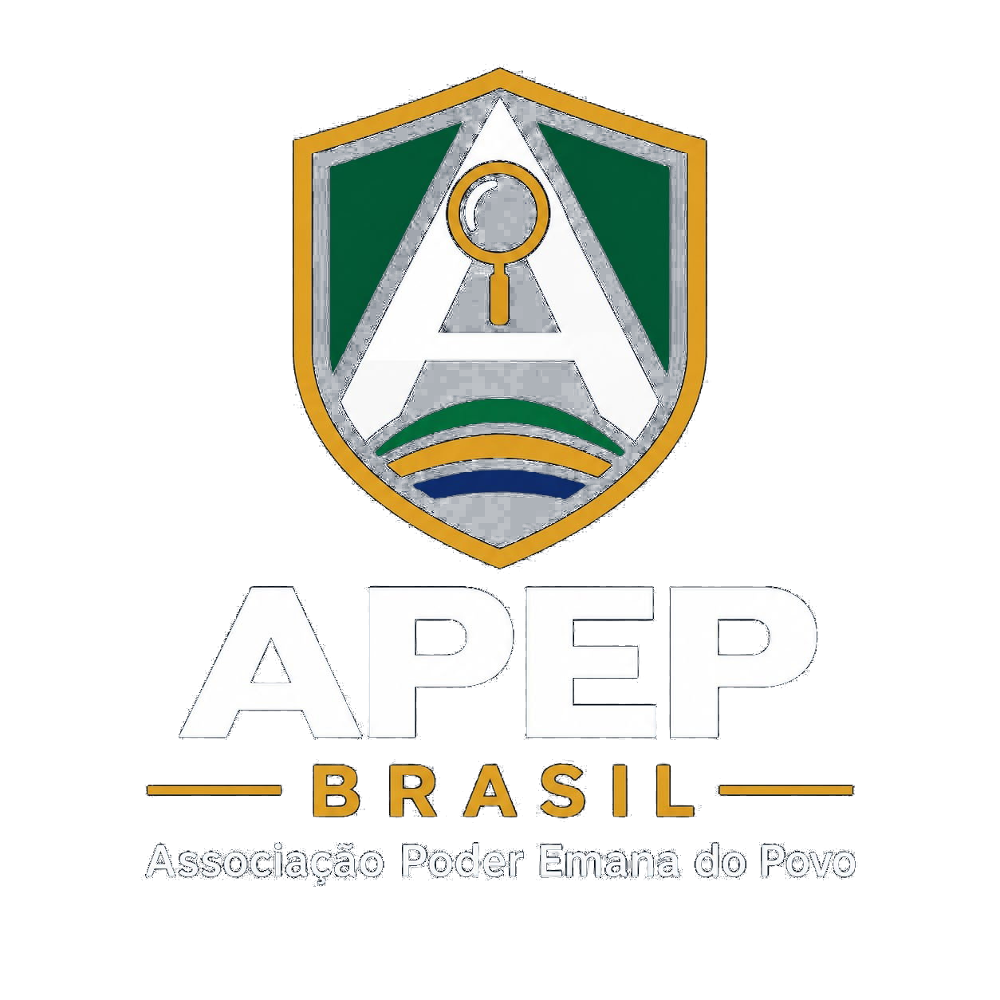
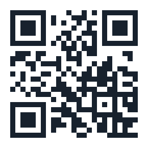

Organize a rua, registre as demandas de segurança e zeladoria e leve tudo, bem fundamentado, à reunião mensal do Conselho Comunitário de Segurança da sua região.
Os Conselhos Comunitários de Segurança reúnem, todo mês, a comunidade e as polícias da região para tratar dos problemas de segurança do bairro. Quem chega com a pauta organizada é ouvido com mais força.
Monte o grupo de segurança da rua no WhatsApp, com um tutor responsável, como no Programa Vizinhança Solidária da PMESP.
Segurança e zeladoria: iluminação, poda, calçada, pontos de risco. Com local, data e, quando houver, imagens.
O tutor apresenta a pauta da rua, bem fundamentada, na reunião mensal do CONSEG da região.
A rua acompanha o que foi encaminhado e cobra o retorno nas reuniões seguintes.

A Associação Poder Emana do Povo é uma organização civil sem fins lucrativos, apartidária e sem ideologia. É o povo pelo povo.

Aponte a câmera para o código e acesse con.seg.br, ou escreva para fale@apepbrasil.org.
O CONSEG Cidadão é uma iniciativa da sociedade civil, mantida pela APEP Brasil. Não é canal oficial do Governo do Estado nem dos Conselhos Comunitários de Segurança, e não substitui os serviços de emergência: em caso de suspeita ou emergência, ligue 190.